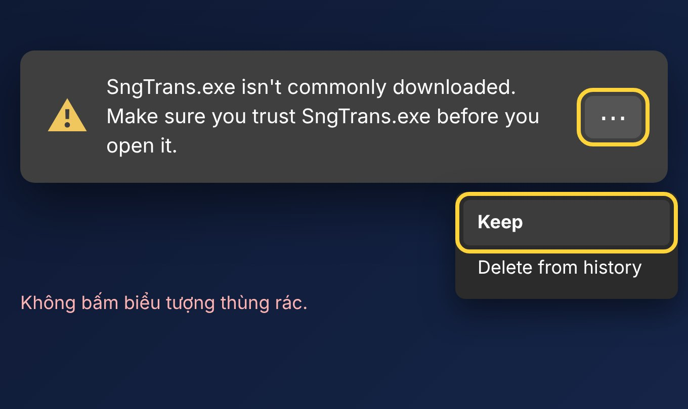
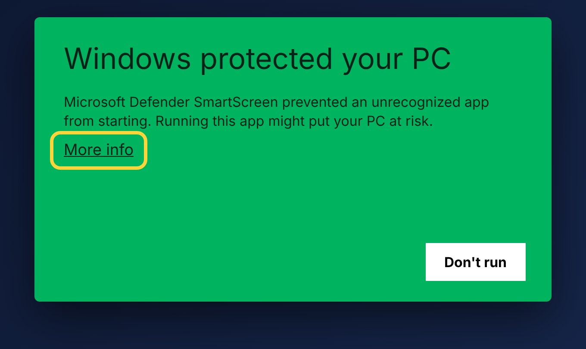
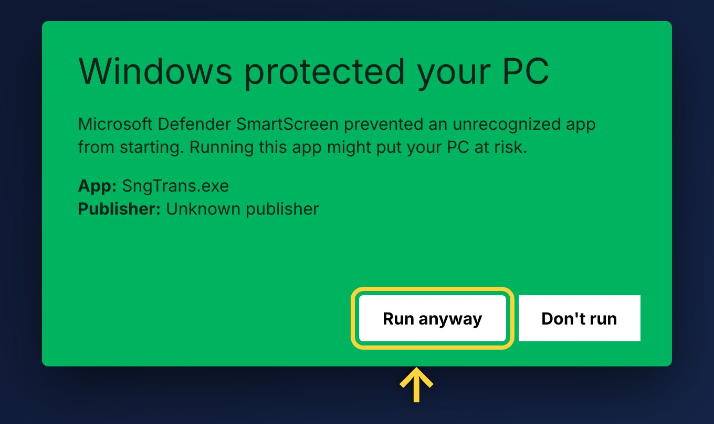

Hướng dẫn sử dụng SngTrans
Phiên bản 2.0 · Tháng 11 năm 2026
Bắt đầu nhanh
SngTrans chạy ngầm ở khay hệ thống. Bôi đen chữ ở bất kỳ app nào (Word, PDF, trình duyệt, chat…) là hiện thẻ dịch ngay trên con trỏ. Miễn phí, chạy trên Windows 10/11, cần có mạng.
- Tải
SngTrans.exevề và bấm đúp để chạy. - Lần đầu, hộp Cài đặt tự mở. Các lần sau app chạy ngầm, chỉ hiện một thông báo nhỏ.
- Mở app bất kỳ, bôi đen một câu tiếng Anh. Bản dịch tiếng Việt hiện ngay.
- 26 ngôn ngữ, tự nhận diện ngôn ngữ nguồn, tự đảo chiều Việt ↔ Anh.
- Thẻ dịch có nghĩa, từ đồng nghĩa, ví dụ, nghe đọc câu gốc và bản dịch.
- Ghi chú từ vựng, xuất CSV mở bằng Excel.
- Không làm mất clipboard: chữ, ảnh, file, HTML, RTF được trả về như cũ.
Cài đặt
SngTrans là một file .exe duy nhất, không cần trình cài đặt. Đặt ở thư mục nào cũng được. Cài đặt và ghi chú lưu riêng ở %APPDATA%\SngTrans nên đổi chỗ file không mất dữ liệu.
| File | Đặc điểm |
|---|---|
SngTrans.exe (đầy đủ) | Khoảng 50–70 MB, tự chứa .NET, chạy được mọi nơi. Nên dùng nếu không chắc. |
SngTrans-nhe.exe (nhẹ) | Chỉ vài MB. Máy cần cài .NET 10 Desktop Runtime một lần. |
Máy hiện cảnh báo khi mở app?
File chưa có chữ ký số nên trình duyệt và Windows có thể cảnh báo. Làm theo 3 bước:



Giao diện
Thẻ dịch
Hiện khi bạn bôi đen chữ hoặc bấm phím tắt dịch.
- Hai viên ngôn ngữ ở đầu thẻ: nguồn (mặc định Tự động) và đích. Bấm để đổi cho lần dịch này.
- Đổi chiều dịch, Ghim (giữ thẻ không tự đóng), Đóng.
- Từ hoặc cụm từ ngắn có thêm Nghĩa, Từ đồng nghĩa, Ví dụ. Đoạn dài chỉ hiện bản dịch cho nhanh.
- Nghe câu gốc, Nghe bản dịch, Sao chép bản dịch, Ghi nhớ, Không dịch app này.
- Thử lại hiện khi dịch lỗi (thường do mất mạng).
Esc hoặc bấm ra ngoài để đóng. Kéo vùng trống của thẻ để di chuyển.
Biểu tượng khay và menu
Biểu tượng nằm ở góc phải dưới màn hình. Windows 11 hay giấu nó sau mũi tên ^. Bấm chuột trái để mở Cài đặt, bấm chuột phải để hiện menu.
| Mục | Tác dụng |
|---|---|
| Tự dịch | Bật/tắt tự dịch khi bôi đen. Dấu ✓ là đang bật. |
| Ghi chú | Mở thẳng trang Ghi chú. |
| Cài đặt | Mở hộp Cài đặt. |
| Cập nhật (vX.Y.Z) | Kiểm tra bản mới ngay. |
| Thoát | Tắt hẳn SngTrans. |
Hộp Cài đặt
Thanh bên trái có 3 trang: Cài đặt, Chặn app, Ghi chú, và nút đỏ Tắt app ở đáy. Mọi thay đổi lưu ngay, không có nút “Lưu”. Trang Cài đặt gồm:
Đổi phím tắt: bấm vào ô phím, nhấn tổ hợp mới (phải kèm Ctrl hoặc Alt), Esc để huỷ, Backspace để về mặc định.
Chặn app: danh sách app mà SngTrans không hiện thẻ khi bạn bôi đen trong đó. Ghi chú: nơi lưu các từ, câu đã bấm Ghi nhớ, có ô tìm kiếm, Xuất CSV và Xoá hết.
Phím tắt
Thao tác với SngTrans
Khởi động và kết thúc
- Khởi động: bấm đúp
SngTrans.exe. Nếu app đang chạy ngầm, bấm đúp lần nữa sẽ mở Cài đặt. - Kết thúc: chuột phải biểu tượng khay → Thoát; hoặc nút đỏ Tắt app trong Cài đặt; hoặc Ctrl+Alt+Shift+Q; hoặc không cần mở app: bấm đúp
Tat-SngTrans.bat/ chạySngTrans.exe --quit.
Dịch một đoạn chữ
- Bôi đen bằng cách kéo chuột, nhấp đúp (một từ) hoặc nhấp ba (cả đoạn).
- Thẻ dịch hiện ngay trên con trỏ. Nếu Tự dịch đang tắt, bôi đen rồi bấm Alt+1.
- Muốn đọc lâu, bấm Ghim.
Bật, tắt tự dịch
Bấm Alt+2, hoặc menu khay → Tự dịch, hoặc gạt công tắc trong Cài đặt. Ba cách này luôn đồng bộ.
Chọn ngôn ngữ
Cài đặt → Ngôn ngữ. Có 26 ngôn ngữ: Tiếng Việt, English, 日本語, 한국어, 中文 (简体/繁體), Français, Deutsch, Español, Português, Italiano, Русский, ไทย, Bahasa Indonesia, العربية, हिन्दी, Türkçe, Nederlands, Polski, Українська, Svenska, Bahasa Melayu, Filipino, Ελληνικά, Čeština, עברית. Khi Tự đảo chiều bật, chữ tiếng Việt dịch sang ngoại ngữ và chữ ngoại ngữ dịch sang tiếng Việt.
Nghe đọc
Bấm biểu tượng loa cạnh câu gốc hoặc bản dịch. Nếu không phát được qua mạng, app dùng giọng đọc có sẵn của Windows (offline). Máy cần cài giọng của ngôn ngữ đó: Cài đặt Windows → Thời gian & ngôn ngữ → Giọng nói.
Lưu và xuất ghi chú
- Trên thẻ dịch, bấm Ghi nhớ.
- Xem lại ở menu khay → Ghi chú, dùng ô tìm kiếm để lọc.
- Bấm Xuất CSV để lưu
ghi_chu.csv(chữ gốc, bản dịch), mở bằng Excel không lỗi tiếng Việt.
Chặn một app không cần dịch
Trên thẻ dịch, tick Không dịch app này. Muốn bật lại: Cài đặt → Chặn app → bỏ app khỏi danh sách.
Cập nhật phiên bản mới
App tự kiểm tra bản mới trên GitHub Releases (20 giây sau khi mở, rồi 6 giờ một lần). Có bản mới sẽ hiện hộp thông báo với nút Cập nhật: app tự tải, kiểm tra SHA256, thay file và mở lại. Kiểm tra ngay: menu khay → Cập nhật.
Lỗi thường gặp
Không thấy biểu tượng ở khay
Windows 11 giấu biểu tượng sau mũi tên ^ ở góc phải taskbar. Bấm mũi tên đó để thấy.
Bôi đen mà không hiện thẻ
- Kiểm tra Tự dịch đang bật (có ✓ ở menu khay). Thử Alt+1.
- Kiểm tra app đó có nằm trong Chặn app không.
- Nếu bật Chỉ khi con trỏ là chữ I, app nào không dùng con trỏ chữ I sẽ không dịch được. Hãy tắt mục này.
- Cửa sổ dòng lệnh (cmd, PowerShell, Windows Terminal) bị bỏ qua có chủ ý vì Ctrl+C ở đó là lệnh ngắt chương trình.
- App đang chạy bằng Run as administrator: hãy chạy SngTrans bằng quyền admin tương ứng.
“Không dịch được” hoặc “Vui lòng kết nối mạng rồi thử lại”
SngTrans dùng dịch vụ dịch miễn phí của Google nên cần có mạng. Nếu dịch quá nhiều trong thời gian ngắn, dịch vụ có thể tạm giới hạn: chờ vài giây rồi bấm Thử lại.
Phím tắt không hoạt động
Có thể app khác đang chiếm tổ hợp đó. Đổi sang tổ hợp khác trong Cài đặt.
Cần nhờ hỗ trợ
Nhật ký luôn nằm ở %APPDATA%\SngTrans\sngtrans.log. Gửi file này kèm mô tả lỗi. Gửi về seangogroup@gmail.com.
Thông tin về SngTrans
- Phiên bản 2.0.
- Cài đặt và ghi chú của bạn được lưu ngay trên máy, không mất khi cập nhật phiên bản mới.
- Cần hỗ trợ hoặc góp ý: seangogroup@gmail.com.